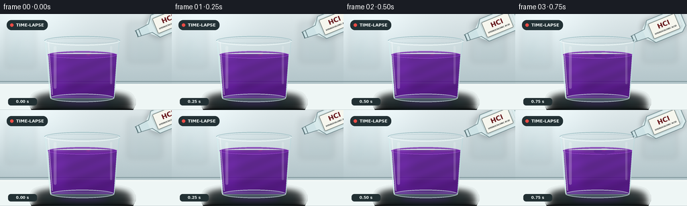
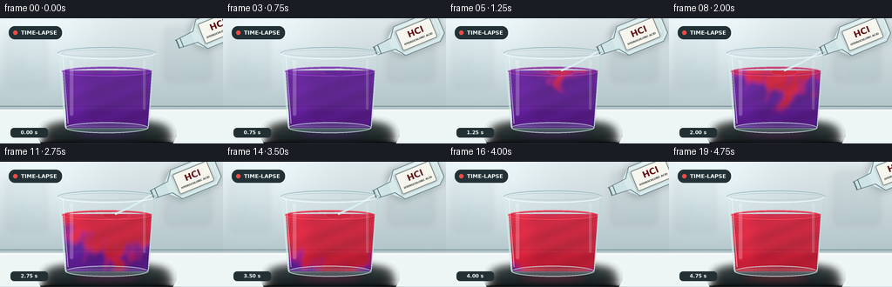

CODING AGENTS AS PIXEL WORLD MODELS
traex/GPT-5.6-Sol · phygen_147
点击播放 · 原生 RGB 像素
逐轮保存的候选
回放视频、检查图与代码变化。
每份候选均可单独播放。实际图片检查记录在下方工具轨迹中。
候选 01播放与检查图
点击播放 · 原生 RGB 像素


展开代码变化
--- 上一保存版本
+++ 本次保存版本
@@ -0,0 +1,230 @@
+from pathlib import Path
+import math
+import numpy as np
+from PIL import Image, ImageDraw, ImageFont, ImageFilter
+import artifact_io
+
+W,H,N = 256,144,20
+S=4
+WS,HS=W*S,H*S
+ROOT=Path(__file__).resolve().parent
+rng=np.random.default_rng(147)
+
+FONT='/usr/share/fonts/truetype/dejavu/DejaVuSans.ttf'
+FONT_B='/usr/share/fonts/truetype/dejavu/DejaVuSans-Bold.ttf'
+
+def font(px,bold=False):
+ return ImageFont.truetype(FONT_B if bold else FONT,px*S)
+
+def scpts(pts): return [(int(x*S),int(y*S)) for x,y in pts]
+def smoothstep(a,b,x):
+ x=np.clip((x-a)/(b-a),0,1)
+ return x*x*(3-2*x)
+
+def rounded(draw,box,r,fill,outline=None,width=1):
+ draw.rounded_rectangle(tuple(int(v*S) for v in box),radius=int(r*S),fill=fill,outline=outline,width=max(1,int(width*S)))
+
+def ellipse(draw,box,fill,outline=None,width=1):
+ draw.ellipse(tuple(int(v*S) for v in box),fill=fill,outline=outline,width=max(1,int(width*S)))
+
+def line(draw,pts,fill,width=1,joint='curve'):
+ draw.line(scpts(pts),fill=fill,width=max(1,int(width*S)),joint=joint)
+
+def polygon(draw,pts,fill): draw.polygon(scpts(pts),fill=fill)
+
+def bottle_layer(frame):
+ """A translucent reagent bottle, tilted so its open neck aims at the beaker."""
+ lay=Image.new('RGBA',(WS,HS),(0,0,0,0)); d=ImageDraw.Draw(lay)
+ # Move into place, hold during pour, then withdraw.
+ if frame < 4:
+ q=smoothstep(0,3,frame); sx=203-29*q; sy=30+8*q
+ elif frame <= 14:
+ sx=174+0.45*math.sin(frame*1.7); sy=38+0.25*math.sin(frame*.9)
+ else:
+ q=smoothstep(14,19,frame); sx=174+39*q; sy=38-10*q
+ ang=-0.39 # local axis from spout toward bottle body
+ u=np.array([math.cos(ang),math.sin(ang)])
+ v=np.array([-math.sin(ang),math.cos(ang)])
+ p=np.array([sx,sy])
+ def P(a,b):
+ z=p+u*a+v*b; return (float(z[0]),float(z[1]))
+ # cast shadow behind bottle
+ sh=Image.new('RGBA',(WS,HS),(0,0,0,0)); sd=ImageDraw.Draw(sh)
+ polygon(sd,[P(19,-10),P(28,-19),P(76,-19),P(82,-13),P(82,13),P(76,19),P(28,19),P(19,10)],(20,34,44,55))
+ sh=sh.filter(ImageFilter.GaussianBlur(4*S)); lay.alpha_composite(sh)
+ d=ImageDraw.Draw(lay)
+ # neck, rim, glass body
+ polygon(d,[P(0,-5),P(23,-7),P(23,7),P(0,5)],(207,230,233,205))
+ polygon(d,[P(20,-8),P(31,-18),P(74,-18),P(82,-11),P(82,11),P(74,18),P(31,18),P(20,8)],(218,236,237,225))
+ # faint pale solution inside bottle
+ polygon(d,[P(28,-13),P(75,-13),P(78,-8),P(78,10),P(73,14),P(29,14)],(188,217,216,80))
+ # outlines
+ line(d,[P(0,-5),P(23,-7),P(31,-18),P(74,-18),P(82,-11),P(82,11),P(74,18),P(31,18),P(23,7),P(0,5)],(91,120,125,210),1.15)
+ line(d,[P(1,-5),P(1,5)],(81,107,112,235),1.5)
+ line(d,[P(31,-15),P(71,-15)],(255,255,255,150),1.2)
+ line(d,[P(76,-9),P(76,8)],(255,255,255,110),1)
+ # label as a rotated local image, matching the bottle axis
+ lab=Image.new('RGBA',(43*S,25*S),(0,0,0,0)); ld=ImageDraw.Draw(lab)
+ ld.rounded_rectangle((0,0,43*S-1,25*S-1),radius=2*S,fill=(249,248,238,246),outline=(117,127,123,220),width=S)
+ ld.text((21.5*S,9.6*S),'HCl',font=font(10,True),anchor='mm',fill=(102,19,24,255))
+ ld.text((21.5*S,18.4*S),'HYDROCHLORIC ACID',font=font(2.9,True),anchor='mm',fill=(47,51,49,255))
+ lab=lab.rotate(math.degrees(-ang),resample=Image.Resampling.BICUBIC,expand=True)
+ # label center near local coordinate (52,0)
+ c=np.array(P(52,0))*S
+ lay.alpha_composite(lab,(int(c[0]-lab.width/2),int(c[1]-lab.height/2)))
+ # cap ring detail
+ d=ImageDraw.Draw(lay)
+ line(d,[P(6,-5.7),P(6,5.7)],(76,103,108,220),1.2)
+ return lay,(sx,sy)
+
+def make_frame(fi):
+ # supersampled soft lab background
+ y=np.arange(HS)[:,None]/S
+ x=np.arange(WS)[None,:]/S
+ top=np.array([221,231,233.],float); bot=np.array([174,193,198.],float)
+ mix=np.clip(y/116,0,1)[...,None]
+ arr=np.broadcast_to(top*(1-mix)+bot*mix,(HS,WS,3)).copy()
+ # diffuse window glow from upper left
+ glow=np.exp(-((x-42)**2/(78**2)+(y-20)**2/(62**2)))[...,None]
+ arr += 20*glow
+ # subtle deterministic film grain
+ grain=rng.normal(0,0.7,(HS,WS,1)); arr+=grain
+ bg=Image.fromarray(np.uint8(np.clip(arr,0,255)),'RGB').convert('RGBA')
+ d=ImageDraw.Draw(bg)
+ # blurred laboratory cabinetry and glass silhouettes
+ back=Image.new('RGBA',(WS,HS),(0,0,0,0)); bd=ImageDraw.Draw(back)
+ rounded(bd,(8,17,53,80),3,(117,145,151,25),(108,136,143,28),1)
+ line(bd,[(30,17),(30,80)],(96,124,130,22),1)
+ rounded(bd,(190,12,241,72),4,(116,142,149,28),(94,122,128,34),1)
+ for bx,bh in [(16,25),(24,34),(34,21),(207,32),(219,23),(230,37)]:
+ rounded(bd,(bx,72-bh,bx+7,72),2,(103,142,147,30))
+ back=back.filter(ImageFilter.GaussianBlur(4*S)); bg.alpha_composite(back)
+ d=ImageDraw.Draw(bg)
+ # backsplash seam and laboratory bench
+ line(d,[(0,101),(256,101)],(117,142,147,75),1)
+ polygon(d,[(0,105),(256,105),(256,144),(0,144)],(119,139,144,255))
+ # bench gradient/highlight overlays
+ for yy in range(105,144):
+ a=int(34*(1-(yy-105)/39))
+ line(d,[(0,yy),(256,yy)],(238,246,245,a),1)
+ line(d,[(0,106),(256,106)],(245,250,247,120),1)
+ # timelapse badge
+ rounded(d,(10,9,71,24),7,(34,49,53,190))
+ ellipse(d,(15,14,20,19),(236,76,69,255))
+ d.text((24*S,16.6*S),'TIME-LAPSE',font=font(6.2,True),anchor='lm',fill=(242,247,246,255))
+ # contact shadow for beaker
+ sh=Image.new('RGBA',(WS,HS),(0,0,0,0)); sd=ImageDraw.Draw(sh)
+ ellipse(sd,(55,123,190,141),(24,39,42,105)); sh=sh.filter(ImageFilter.GaussianBlur(6*S)); bg.alpha_composite(sh)
+
+ # Bottle goes behind stream and in front of background
+ bottle,spout=bottle_layer(fi); bg.alpha_composite(bottle)
+
+ # Glass rear wall
+ glass=Image.new('RGBA',(WS,HS),(0,0,0,0)); gd=ImageDraw.Draw(glass)
+ polygon(gd,[(67,39),(178,39),(170,127),(75,127)],(225,243,243,28))
+ # back rim
+ ellipse(gd,(66,33,179,47),(226,243,244,24),(208,230,232,205),1.35)
+ ellipse(gd,(70,36,175,44),(200,223,227,15),(116,153,160,100),.7)
+ bg.alpha_composite(glass)
+
+ # Fluid field clipped to tapered beaker interior
+ yy,xx=np.mgrid[0:HS,0:WS]; X=xx/S; Y=yy/S
+ left=72+(Y-61)*0.07; right=174-(Y-61)*0.07
+ mask=(Y>=60)&(Y<=126)&(X>=left)&(X<=right)
+ p=np.clip((fi-3)/15,0,1.08)
+ # Irregular arrival time: top-center acid enters, falls in winding plumes, then diffuses laterally.
+ depth=np.clip((Y-60)/66,0,1)
+ horiz=np.abs(X-(132+4*np.sin(depth*9+0.45*fi)))/57
+ turbulence=(0.045*np.sin(X*.22+Y*.13)+0.035*np.sin(X*.08-Y*.25+1.1)+
+ 0.022*np.sin(X*.47+Y*.09))
+ arrival=.03 + .53*depth + .28*horiz + turbulence
+ conc=smoothstep(-.07,.18,p-arrival)
+ # descending narrow red mixing fingers visible early in the timelapse
+ front_y=61+83*np.clip(p/.72,0,1)
+ winding=132+5*np.sin((Y-57)*.17+fi*.30)
+ finger=np.exp(-((X-winding)/(4.0+7*p))**2)*smoothstep(front_y+13,front_y-3,Y)
+ conc=np.maximum(conc, finger*smoothstep(0,.16,p))
+ # broad surface pool where acid meets indicator
+ pool=np.exp(-((X-132)/(13+39*p))**2-((Y-62)/(3+18*p))**2)
+ conc=np.maximum(conc,pool*smoothstep(0,.17,p))
+ conc=np.clip(conc,0,1)
+ base=np.array([90.,25.,142.]); acid=np.array([205.,28.,54.])
+ fluid=base[None,None,:]*(1-conc[...,None])+acid[None,None,:]*conc[...,None]
+ # rich translucent solution lighting and depth
+ light=1.0+0.13*np.exp(-((X-87)/15)**2)-0.13*depth+0.035*np.sin(Y*.28+X*.11)
+ fluid*=light[...,None]
+ # a warm magenta transition boundary
+ boundary=4*conc*(1-conc)
+ fluid[:,:,0]+=18*boundary; fluid[:,:,2]+=15*boundary
+ fluid=np.clip(fluid,0,255).astype(np.uint8)
+ fa=np.zeros((HS,WS,4),np.uint8); fa[:,:,:3]=fluid; fa[:,:,3]=mask.astype(np.uint8)*235
+ bg.alpha_composite(Image.fromarray(fa,'RGBA'))
+
+ # meniscus and surface glow
+ detail=Image.new('RGBA',(WS,HS),(0,0,0,0)); dd=ImageDraw.Draw(detail)
+ # liquid top elliptical surface, shifting from violet to red
+ surface_c=smoothstep(.0,.52,p)
+ c0=np.array([111,37,162])*(1-surface_c)+np.array([216,42,65])*surface_c
+ ellipse(dd,(71,55.5,174,66.5),tuple(map(int,c0))+(215,),tuple(map(int,np.minimum(255,c0+45)))+(210,),.8)
+ ellipse(dd,(76,58,169,63.8),(230,162,222,22))
+ # acid impact dimple and ripples while pouring
+ pouring=3 <= fi <= 15
+ if pouring:
+ strength=smoothstep(3,5,fi)*smoothstep(16,14,fi)
+ ellipse(dd,(125,59,140,65),(245,175,177,int(45*strength)),(249,205,206,int(180*strength)),.65)
+ ellipse(dd,(117,57.8,148,66.2),(0,0,0,0),(242,143,158,int(90*strength)),.5)
+ bg.alpha_composite(detail)
+
+ # Clear pouring stream and droplets in front, from bottle spout to surface
+ stream=Image.new('RGBA',(WS,HS),(0,0,0,0)); sd=ImageDraw.Draw(stream)
+ if pouring:
+ qin=smoothstep(3,5,fi); qout=smoothstep(16,14,fi)
+ alpha=int(210*qin*qout)
+ sx,sy=spout
+ # slightly curved continuous stream
+ pts=[]
+ for k in range(13):
+ t=k/12; px=sx*(1-t)+132*t+1.3*math.sin(math.pi*t); py=sy*(1-t)+60.3*t+2.1*t*(1-t)
+ pts.append((px,py))
+ line(sd,pts,(211,238,239,alpha),2.7)
+ line(sd,[(a+.45,b) for a,b in pts],(255,255,255,min(245,alpha+25)),.65)
+ # droplets at beginning/end
+ if fi in (3,4,15):
+ for k in range(3):
+ tt=(k+1)/4; px=sx*(1-tt)+132*tt; py=sy*(1-tt)+60*tt+2.5
+ ellipse(sd,(px-1,py-1.6,px+1,py+1.6),(224,246,246,alpha))
+ bg.alpha_composite(stream)
+
+ # Front wall, base and realistic highlights/refractions
+ front=Image.new('RGBA',(WS,HS),(0,0,0,0)); fd=ImageDraw.Draw(front)
+ line(fd,[(67.5,40),(75,125)],(211,237,238,215),1.25)
+ line(fd,[(177.5,40),(170,125)],(185,215,219,205),1.15)
+ line(fd,[(72,42),(78,121)],(255,255,255,110),1.3)
+ line(fd,[(76,125),(169,125)],(207,231,231,195),1.1)
+ # curved thick base
+ ellipse(fd,(75,119.5,170,132),(136,174,178,48),(210,232,232,200),1.1)
+ line(fd,[(79,124),(166,124)],(251,255,255,82),.7)
+ # vertical specular streaks
+ rounded(fd,(80,48,84,112),2,(255,255,255,55))
+ rounded(fd,(164,48,167,105),1.5,(255,255,255,42))
+ # front rim ensures vessel opening readability
+ fd.arc(tuple(int(v*S) for v in (66,33,179,47)),0,180,fill=(246,253,252,225),width=1*S)
+ fd.arc(tuple(int(v*S) for v in (66,33,179,47)),180,360,fill=(128,167,174,170),width=1*S)
+ bg.alpha_composite(front)
+
+ # Tiny bench reflection, color follows fluid state
+ refl=Image.new('RGBA',(WS,HS),(0,0,0,0)); rd=ImageDraw.Draw(refl)
+ rc=tuple(map(int,base*(1-min(1,p)) + acid*min(1,p)))
+ ellipse(rd,(81,128,165,139),rc+(35,)); refl=refl.filter(ImageFilter.GaussianBlur(4*S)); bg.alpha_composite(refl)
+
+ # elapsed indicator reinforces timelapse without obscuring chemistry
+ d=ImageDraw.Draw(bg)
+ rounded(d,(12,126,55,137),4,(34,48,51,145))
+ d.text((33.5*S,131.3*S),f'{fi/4:0.2f} s',font=font(5.7,True),anchor='mm',fill=(235,243,242,235))
+
+ out=bg.convert('RGB').resize((W,H),Image.Resampling.LANCZOS)
+ return np.asarray(out,dtype=np.uint8)
+
+frames=np.stack([make_frame(i) for i in range(N)],axis=0)
+artifact_io.save(frames,ROOT)
+print('saved',frames.shape,frames.dtype)
可观测工具轨迹
实际执行的命令与返回图片。
命令 1exit 0
/bin/bash -lc "cat prompt.txt && printf '\\n---RULES---\\n' && cat GENERATION_RULES.md && printf '\\n---SPEC---\\n' && cat task_spec.json"
命令 2exit 0
/bin/bash -lc "find . -maxdepth 2 -type f -printf '%p\\n' | sort"
命令 3exit 0
/bin/bash -lc "which ffmpeg; which python3; python3 - <<'PY'
try:
import cv2; print('cv2',cv2.__version__)
except Exception as e: print('no cv2',e)
try:
from PIL import Image; print('PIL ok')
except Exception as e: print('no PIL',e)
PY"命令 4exit 0
/bin/bash -lc "sed -n '1,240p' artifact_io.py"
命令 5exit 0
/bin/bash -lc 'find /usr/share/fonts/truetype -type f | head -30'
命令 6exit 0
/bin/bash -lc "cat > generate.py <<'PY'
from pathlib import Path
import math
import numpy as np
from PIL import Image, ImageDraw, ImageFont, ImageFilter
import artifact_io
W,H,N = 256,144,20
S=4
WS,HS=W*S,H*S
ROOT=Path(__file__).resolve().parent
rng=np.random.default_rng(147)
FONT='/usr/share/fonts/truetype/dejavu/DejaVuSans.ttf'
FONT_B='/usr/share/fonts/truetype/dejavu/DejaVuSans-Bold.ttf'
def font(px,bold=False):
return ImageFont.truetype(FONT_B if bold else FONT,px*S)
def scpts(pts): return [(int(x*S),int(y*S)) for x,y in pts]
def smoothstep(a,b,x):
x=np.clip((x-a)/(b-a),0,1)
return x*x*(3-2*x)
def rounded(draw,box,r,fill,outline=None,width=1):
draw.rounded_rectangle(tuple(int(v*S) for v in box),radius=int(r*S),fill=fill,outline=outline,width=max(1,int(width*S)))
def ellipse(draw,box,fill,outline=None,width=1):
draw.ellipse(tuple(int(v*S) for v in box),fill=fill,outline=outline,width=max(1,int(width*S)))
def line(draw,pts,fill,width=1,joint='curve'):
draw.line(scpts(pts),fill=fill,width=max(1,int(width*S)),joint=joint)
def polygon(draw,pts,fill): draw.polygon(scpts(pts),fill=fill)
def bottle_layer(frame):
\"\"\"A translucent reagent bottle, tilted so its open neck aims at the beaker.\"\"\"
lay=Image.new('RGBA',(WS,HS),(0,0,0,0)); d=ImageDraw.Draw(lay)
# Move into place, hold during pour, then withdraw.
if frame < 4:
q=smoothstep(0,3,frame); sx=203-29*q; sy=30+8*q
elif frame <= 14:
sx=174+0.45*math.sin(frame*1.7); sy=38+0.25*math.sin(frame*.9)
else:
q=smoothstep(14,19,frame); sx=174+39*q; sy=38-10*q
ang=-0.39 # local axis from spout toward bottle body
u=np.array([math.cos(ang),math.sin(ang)])
v=np.array([-math.sin(ang),math.cos(ang)])
p=np.array([sx,sy])
def P(a,b):
z=p+u*a+v*b; return (float(z[0]),float(z[1]))
# cast shadow behind bottle
sh=Image.new('RGBA',(WS,HS),(0,0,0,0)); sd=ImageDraw.Draw(sh)
polygon(sd,[P(19,-10),P(28,-19),P(76,-19),P(82,-13),P(82,13),P(76,19),P(28,19),P(19,10)],(20,34,44,55))
sh=sh.filter(ImageFilter.GaussianBlur(4*S)); lay.alpha_composite(sh)
d=ImageDraw.Draw(lay)
# neck, rim, glass body
polygon(d,[P(0,-5),P(23,-7),P(23,7),P(0,5)],(207,230,233,205))
polygon(d,[P(20,-8),P(31,-18),P(74,-18),P(82,-11),P(82,11),P(74,18),P(31,18),P(20,8)],(218,236,237,225))
# faint pale solution inside bottle
polygon(d,[P(28,-13),P(75,-13),P(78,-8),P(78,10),P(73,14),P(29,14)],(188,217,216,80))
# outlines
line(d,[P(0,-5),P(23,-7),P(31,-18),P(74,-18),P(82,-11),P(82,11),P(74,18),P(31,18),P(23,7),P(0,5)],(91,120,125,210),1.15)
line(d,[P(1,-5),P(1,5)],(81,107,112,235),1.5)
line(d,[P(31,-15),P(71,-15)],(255,255,255,150),1.2)
line(d,[P(76,-9),P(76,8)],(255,255,255,110),1)
# label as a rotated local image, matching the bottle axis
lab=Image.new('RGBA',(43*S,25*S),(0,0,0,0)); ld=ImageDraw.Draw(lab)
ld.rounded_rectangle((0,0,43*S-1,25*S-1),radius=2*S,fill=(249,248,238,246),outline=(117,127,123,220),width=S)
ld.text((21.5*S,9.6*S),'HCl',font=font(10,True),anchor='mm',fill=(102,19,24,255))
ld.text((21.5*S,18.4*S),'HYDROCHLORIC ACID',font=font(2.9,True),anchor='mm',fill=(47,51,49,255))
lab=lab.rotate(math.degrees(-ang),resample=Image.Resampling.BICUBIC,expand=True)
# label center near local coordinate (52,0)
c=np.array(P(52,0))*S
lay.alpha_composite(lab,(int(c[0]-lab.width/2),int(c[1]-lab.height/2)))
# cap ring detail
d=ImageDraw.Draw(lay)
line(d,[P(6,-5.7),P(6,5.7)],(76,103,108,220),1.2)
return lay,(sx,sy)
def make_frame(fi):
# supersampled soft lab background
y=np.arange(HS)[:,None]/S
x=np.arange(WS)[None,:]/S
top=np.array([221,231,233.],float); bot=np.array([174,193,198.],float)
mix=np.clip(y/116,0,1)[...,None]
arr=np.broadcast_to(top*(1-mix)+bot*mix,(HS,WS,3)).copy()
# diffuse window glow from upper left
glow=np.exp(-((x-42)**2/(78**2)+(y-20)**2/(62**2)))[...,None]
arr += 20*glow
# subtle deterministic film grain
grain=rng.normal(0,0.7,(HS,WS,1)); arr+=grain
bg=Image.fromarray(np.uint8(np.clip(arr,0,255)),'RGB').convert('RGBA')
d=ImageDraw.Draw(bg)
# blurred laboratory cabinetry and glass silhouettes
back=Image.new('RGBA',(WS,HS),(0,0,0,0)); bd=ImageDraw.Draw(back)
rounded(bd,(8,17,53,80),3,(117,145,151,25),(108,136,143,28),1)
line(bd,[(30,17),(30,80)],(96,124,130,22),1)
rounded(bd,(190,12,241,72),4,(116,142,149,28),(94,122,128,34),1)
for bx,bh in [(16,25),(24,34),(34,21),(207,32),(219,23),(230,37)]:
rounded(bd,(bx,72-bh,bx+7,72),2,(103,142,147,30))
back=back.filter(ImageFilter.GaussianBlur(4*S)); bg.alpha_composite(back)
d=ImageDraw.Draw(bg)
# backsplash seam and laboratory bench
line(d,[(0,101),(256,101)],(117,142,147,75),1)
polygon(d,[(0,105),(256,105),(256,144),(0,144)],(119,139,144,255))
# bench gradient/highlight overlays
for yy in range(105,144):
a=int(34*(1-(yy-105)/39))
line(d,[(0,yy),(256,yy)],(238,246,245,a),1)
line(d,[(0,106),(256,106)],(245,250,247,120),1)
# timelapse badge
rounded(d,(10,9,71,24),7,(34,49,53,190))
ellipse(d,(15,14,20,19),(236,76,69,255))
d.text((24*S,16.6*S),'TIME-LAPSE',font=font(6.2,True),anchor='lm',fill=(242,247,246,255))
# contact shadow for beaker
sh=Image.new('RGBA',(WS,HS),(0,0,0,0)); sd=ImageDraw.Draw(sh)
ellipse(sd,(55,123,190,141),(24,39,42,105)); sh=sh.filter(ImageFilter.GaussianBlur(6*S)); bg.alpha_composite(sh)
# Bottle goes behind stream and in front of background
bottle,spout=bottle_layer(fi); bg.alpha_composite(bottle)
# Glass rear wall
glass=Image.new('RGBA',(WS,HS),(0,0,0,0)); gd=ImageDraw.Draw(glass)
polygon(gd,[(67,39),(178,39),(170,127),(75,127)],(225,243,243,28))
# back rim
ellipse(gd,(66,33,179,47),(226,243,244,24),(208,230,232,205),1.35)
ellipse(gd,(70,36,175,44),(200,223,227,15),(116,153,160,100),.7)
bg.alpha_composite(glass)
# Fluid field clipped to tapered beaker interior
yy,xx=np.mgrid[0:HS,0:WS]; X=xx/S; Y=yy/S
left=72+(Y-61)*0.07; right=174-(Y-61)*0.07
mask=(Y>=60)&(Y<=126)&(X>=left)&(X<=right)
p=np.clip((fi-3)/15,0,1.08)
# Irregular arrival time: top-center acid enters, falls in winding plumes, then diffuses laterally.
depth=np.clip((Y-60)/66,0,1)
horiz=np.abs(X-(132+4*np.sin(depth*9+0.45*fi)))/57
turbulence=(0.045*np.sin(X*.22+Y*.13)+0.035*np.sin(X*.08-Y*.25+1.1)+
0.022*np.sin(X*.47+Y*.09))
arrival=.03 + .53*depth + .28*horiz + turbulence
conc=smoothstep(-.07,.18,p-arrival)
# descending narrow red mixing fingers visible early in the timelapse
front_y=61+83*np.clip(p/.72,0,1)
winding=132+5*np.sin((Y-57)*.17+fi*.30)
finger=np.exp(-((X-winding)/(4.0+7*p))**2)*smoothstep(front_y+13,front_y-3,Y)
conc=np.maximum(conc, finger*smoothstep(0,.16,p))
# broad surface pool where acid meets indicator
pool=np.exp(-((X-132)/(13+39*p))**2-((Y-62)/(3+18*p))**2)
conc=np.maximum(conc,pool*smoothstep(0,.17,p))
conc=np.clip(conc,0,1)
base=np.array([90.,25.,142.]); acid=np.array([205.,28.,54.])
fluid=base[None,None,:]*(1-conc[...,None])+acid[None,None,:]*conc[...,None]
# rich translucent solution lighting and depth
light=1.0+0.13*np.exp(-((X-87)/15)**2)-0.13*depth+0.035*np.sin(Y*.28+X*.11)
fluid*=light[...,None]
# a warm magenta transition boundary
boundary=4*conc*(1-conc)
fluid[:,:,0]+=18*boundary; fluid[:,:,2]+=15*boundary
fluid=np.clip(fluid,0,255).astype(np.uint8)
fa=np.zeros((HS,WS,4),np.uint8); fa[:,:,:3]=fluid; fa[:,:,3]=mask.astype(np.uint8)*235
bg.alpha_composite(Image.fromarray(fa,'RGBA'))
# meniscus and surface glow
detail=Image.new('RGBA',(WS,HS),(0,0,0,0)); dd=ImageDraw.Draw(detail)
# liquid top elliptical surface, shifting from violet to red
surface_c=smoothstep(.0,.52,p)
c0=np.array([111,37,162])*(1-surface_c)+np.array([216,42,65])*surface_c
ellipse(dd,(71,55.5,174,66.5),tuple(map(int,c0))+(215,),tuple(map(int,np.minimum(255,c0+45)))+(210,),.8)
ellipse(dd,(76,58,169,63.8),(230,162,222,22))
# acid impact dimple and ripples while pouring
pouring=3 <= fi <= 15
if pouring:
strength=smoothstep(3,5,fi)*smoothstep(16,14,fi)
ellipse(dd,(125,59,140,65),(245,175,177,int(45*strength)),(249,205,206,int(180*strength)),.65)
ellipse(dd,(117,57.8,148,66.2),(0,0,0,0),(242,143,158,int(90*strength)),.5)
bg.alpha_composite(detail)
# Clear pouring stream and droplets in front, from bottle spout to surface
stream=Image.new('RGBA',(WS,HS),(0,0,0,0)); sd=ImageDraw.Draw(stream)
if pouring:
qin=smoothstep(3,5,fi); qout=smoothstep(16,14,fi)
alpha=int(210*qin*qout)
sx,sy=spout
# slightly curved continuous stream
pts=[]
for k in range(13):
t=k/12; px=sx*(1-t)+132*t+1.3*math.sin(math.pi*t); py=sy*(1-t)+60.3*t+2.1*t*(1-t)
pts.append((px,py))
line(sd,pts,(211,238,239,alpha),2.7)
line(sd,[(a+.45,b) for a,b in pts],(255,255,255,min(245,alpha+25)),.65)
# droplets at beginning/end
if fi in (3,4,15):
for k in range(3):
tt=(k+1)/4; px=sx*(1-tt)+132*tt; py=sy*(1-tt)+60*tt+2.5
ellipse(sd,(px-1,py-1.6,px+1,py+1.6),(224,246,246,alpha))
bg.alpha_composite(stream)
# Front wall, base and realistic highlights/refractions
front=Image.new('RGBA',(WS,HS),(0,0,0,0)); fd=ImageDraw.Draw(front)
line(fd,[(67.5,40),(75,125)],(211,237,238,215),1.25)
line(fd,[(177.5,40),(170,125)],(185,215,219,205),1.15)
line(fd,[(72,42),(78,121)],(255,255,255,110),1.3)
line(fd,[(76,125),(169,125)],(207,231,231,195),1.1)
# curved thick base
ellipse(fd,(75,119.5,170,132),(136,174,178,48),(210,232,232,200),1.1)
line(fd,[(79,124),(166,124)],(251,255,255,82),.7)
# vertical specular streaks
rounded(fd,(80,48,84,112),2,(255,255,255,55))
rounded(fd,(164,48,167,105),1.5,(255,255,255,42))
# front rim ensures vessel opening readability
fd.arc(tuple(int(v*S) for v in (66,33,179,47)),0,180,fill=(246,253,252,225),width=1*S)
fd.arc(tuple(int(v*S) for v in (66,33,179,47)),180,360,fill=(128,167,174,170),width=1*S)
bg.alpha_composite(front)
# Tiny bench reflection, color follows fluid state
refl=Image.new('RGBA',(WS,HS),(0,0,0,0)); rd=ImageDraw.Draw(refl)
rc=tuple(map(int,base*(1-min(1,p)) + acid*min(1,p)))
ellipse(rd,(81,128,165,139),rc+(35,)); refl=refl.filter(ImageFilter.GaussianBlur(4*S)); bg.alpha_composite(refl)
# elapsed indicator reinforces timelapse without obscuring chemistry
d=ImageDraw.Draw(bg)
rounded(d,(12,126,55,137),4,(34,48,51,145))
d.text((33.5*S,131.3*S),f'{fi/4:0.2f} s',font=font(5.7,True),anchor='mm',fill=(235,243,242,235))
out=bg.convert('RGB').resize((W,H),Image.Resampling.LANCZOS)
return np.asarray(out,dtype=np.uint8)
frames=np.stack([make_frame(i) for i in range(N)],axis=0)
artifact_io.save(frames,ROOT)
print('saved',frames.shape,frames.dtype)
PY
python3 generate.py"命令 7exit 0
/bin/bash -lc "ls -lh pixels.npz index.html inspection.png frames/00.png frames/19.png generate.py && python3 - <<'PY'
import numpy as np
z=np.load('pixels.npz')['pixels']
print('pixels',z.shape,z.dtype,'frames changed',[(z[:,:,i]"'!=z[:,:,i-1]).mean() for i in range(1,20)])
PY'命令 8exit 0
/bin/bash -lc "python3 - <<'PY'
from PIL import Image
import numpy as np
for i in [0,3,5,8,11,14,16,19]:
a=np.asarray(Image.open(f'frames/{i:02d}.png'))
print(i,a.shape,a.dtype,a.min(),a.max(),np.mean(a,axis=(0,1)).round(1))
PY"视觉工具实际返回图片 1

保存候选 1 份；完成命令 8 次；可验证图片返回 1 张。原始 API 响应与完整日志保留在本地。